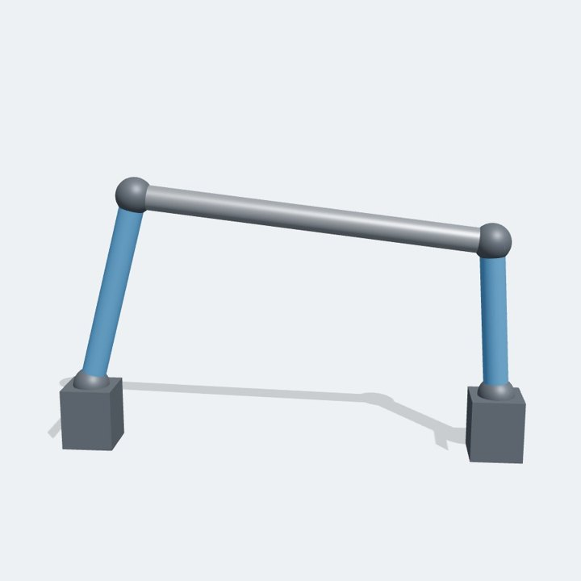
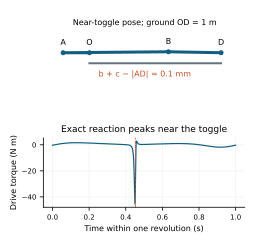

Simulations grouped by the engineering need they answer. Each one states its question, and the answer where it has been checked.
Need 1
Coordinated motion
Many actuators or joints driving one mechanism, with closed loops that stay closed.
Two-stage Stewart platform
Two Stewart platforms, one on top of the other. Every motion of the lower stage moves the base of the upper one, and every joint must stay closed while all twelve leg lengths change.
18 simulated seconds.
The question
How closely does the upper platform follow the pose set by the twelve leg lengths?
The answer
Both platforms stay within 10−9 m in position and 2×10−9 rad in orientation of the exact pose from forward kinematics, at about 12× real time on one core of a 2.1 GHz Intel Xeon.
Six extendable legs move a plate. Their geometry couples translation and rotation, which makes it a compact example of a spatial closed loop.
Prescribed leg motion.
The question
Do coordinated leg-length changes produce the intended platform motion with every joint closed?
Where it leads
Positioning stages, motion platforms and actuator trajectories. The two-stage case extends the same idea.
100-link chain
A long chain turns a simple pendulum into a strongly coupled system. Each link moves its neighbours, and every joint must stay closed through the swing.
A 100-link pendulum released from rest.
The question
Can a hundred coupled joints stay closed through a violent swing, at a useful speed?
Why it matters
Cables, tethers, track loops and long linkages all behave like this. Long chains test large rotations, constraint propagation and the cost of solving many coupled equations at every step.
Need 2
Flexible interaction
Machines that carry or contain soft parts and loose materials: fabric, flexible links, grains.
Cotton sheet held by two robot arms
Two 7-joint arms hold an A3 cotton sheet by its top corners and move it around. Arms and cloth are solved as one model, so the sheet's weight and drag act on the grippers and arm joints.
Rendered from the solver output. Arm models from MuJoCo Menagerie; cloth motion from recordings by Coltraro et al. (2025).
The question
When two arms move a cotton sheet, how does the sheet lag, fold and ripple?
What is modelled
The sheet is a grid of small patches joined by flexible connections, with air drag and the mass of the air it pushes. Each arm follows its path under joint control.
Soft robot link
A 400 mm link of soft material, 40 mm square, is swung back and forth by a driven hinge. It is a flexible solid of 216 hex elements, joined to a rigid hub.
Half speed. Colour shows how far the link bends away from its rigid position, up to 28 mm; the thin outline marks where a rigid link would be.
The question
How much does a flexible link lag and bend when its joint is driven hard?
How it is checked
The same hex elements match the exact large-deflection beam solution to within 0.2%. Joint constraints between the solid and the hub hold to round-off level.
Granular collapse
A column of about 15,000 grains is released and spreads across the floor. The colour bands show where each grain started.
Quarter speed.
The question
How does a loose material flow and settle? This is the groundwork for buckets, grippers and wheels working in sand or powder.
What is modelled
Every grain is a sphere with elastic contact, friction and rolling resistance.
Need 3
Accurate loads
Joint and actuator loads through the whole duty cycle, for sizing and checks.
Four-bar linkage at the edge of toggle
A crank drives a four-bar linkage whose links come within 0.1 mm of lining up straight once every turn. Near that point a small force holds a large one, which is why clamps and presses use it, and why solvers struggle with it.


The model, the linkage at its closest approach to toggle, and the exact drive torque over one revolution.
The question
What torque does the drive need through the whole cycle, including the sharp peak near toggle?
The answer
Over 1,000 revolutions, the computed drive torque stays within 3.6×10−3 % of its peak from the exact value.
A 1.8 t mini excavator drives slowly forward on its tracks, stops, then swings a load hanging from its boom 90 degrees to the side.
Real time. 100 bodies, including every track shoe.
The question
How does a hanging load sway as the machine drives, stops and swings, and how quickly does it settle? In a study, the output would be swing-drive torque, cylinder forces and track contact loads through the cycle.
What is modelled
Each track is a loop of 38 shoes in contact with the ground, driven by its sprocket. The upper turns on its swing bearing with the load on a cable.
Checks
Checked against exact answers
Classical rotating bodies whose exact motion is known, used to test the solver itself. The long-run versions are in the papers.
Gimballed gyroscope
A spinning rotor sits inside two free gimbals. The rotor's spin couples the motion of the two gimbals in ways that are hard to predict by eye.
12 simulated seconds.
The question
Do energy, the rotor's spin and the angular momentum about the outer hinge stay constant, as they must?
How it is checked
Each conserved quantity is tracked over the run, and halving the time step barely changes the motion.
Start with a free review: send a short description of the mechanism and the question, and get a written feasibility note. If it fits, a pilot answers one engineering question with a report you can check.